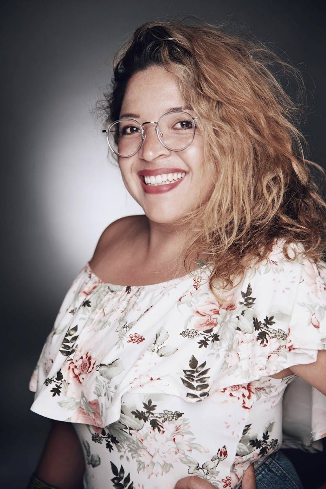

Welcome To My Portafolio

About me
I am from Bogota, Colombia. Living in Atlanta, GA since 2016. I have over 10 years of experience in the marketing industry, working with a variety of industries such as restaurants, hotels, travel agencies, and interactive art. My bachelor's degree in Modern Languages has helped me to communicate effectively with diverse audiences and adapt to different cultures.
One of my key skills is website development using WordPress and Elementor. I have designed and developed numerous websites for clients, and I am adept at customizing themes, adding functionality through plugins, and optimizing the website for search engines.
As a project manager, I have successfully led teams to deliver projects on time and within budget. I have a keen eye for detail, and I ensure that all stakeholders are kept informed of progress throughout the project lifecycle.
My sales expertise comes from a deep understanding of consumer behavior and market trends. I have used this knowledge to develop and implement effective marketing strategies that drive revenue growth for businesses.
Overall, I am passionate about creating digital solutions that help businesses to grow online. I am always eager to learn new skills and stay up-to-date with the latest industry trends. With my strong communication skills, project management expertise, and sales acumen, I am confident that I can add value to any team.
One of my key skills is website development using WordPress and Elementor. I have designed and developed numerous websites for clients, and I am adept at customizing themes, adding functionality through plugins, and optimizing the website for search engines.
As a project manager, I have successfully led teams to deliver projects on time and within budget. I have a keen eye for detail, and I ensure that all stakeholders are kept informed of progress throughout the project lifecycle.
My sales expertise comes from a deep understanding of consumer behavior and market trends. I have used this knowledge to develop and implement effective marketing strategies that drive revenue growth for businesses.
Overall, I am passionate about creating digital solutions that help businesses to grow online. I am always eager to learn new skills and stay up-to-date with the latest industry trends. With my strong communication skills, project management expertise, and sales acumen, I am confident that I can add value to any team.